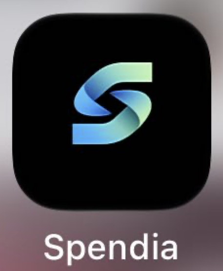

Spendia · cinta 3D v3
Dirección elegida: pliegue continuo. Luz de borde, canto sólido, cero tajo negro.

Punto de partida
Se conserva la cinta con volumen y el pliegue. Se corrigen los arcos (tangentes exactos), el grosor constante, una única fuente de luz arriba a la izquierda, un canto extruido sólido y luz de borde en la cara iluminada.